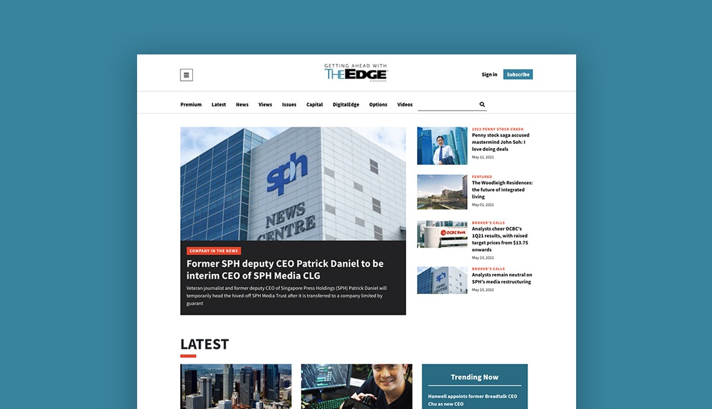
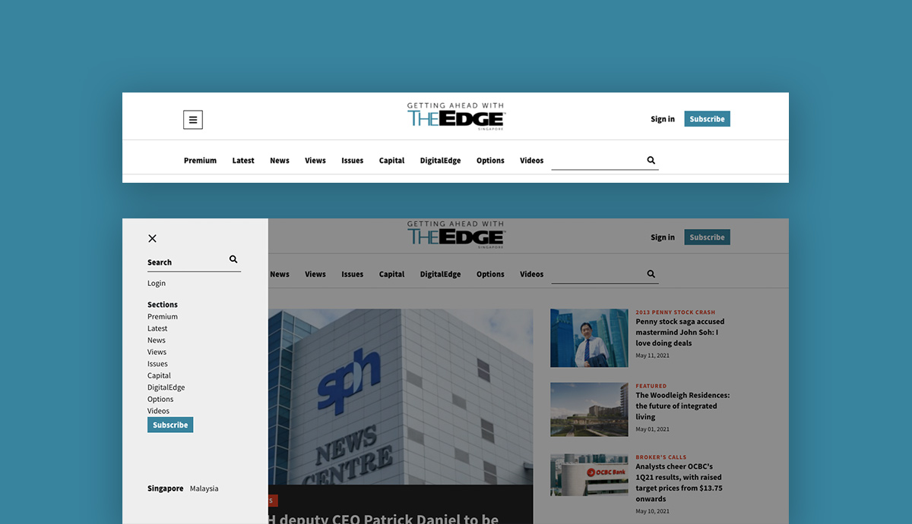
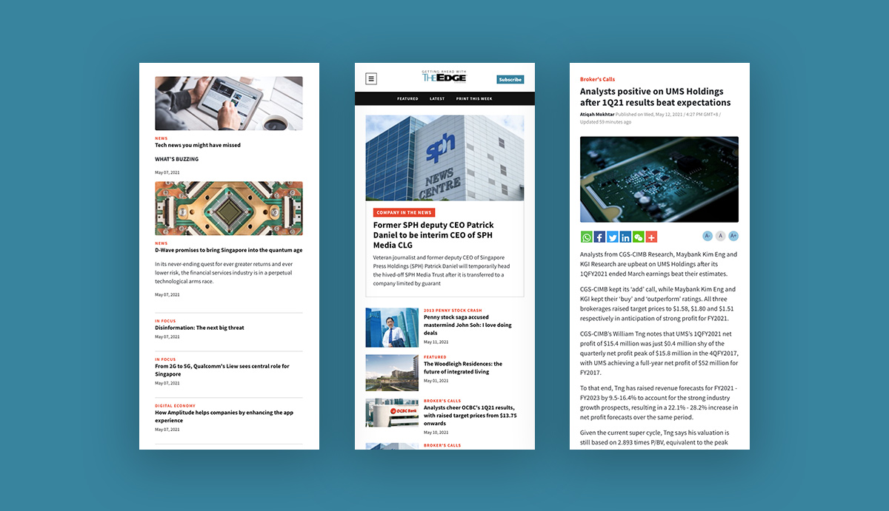

The Edge Singapore
Introduction
The Edge Singapore published and launched its first issue on 4 March 2002. Since then, the publication stands as the only weekly local newspaper that gives readers an in-depth and analytical coverage on business and investments within Singapore and across the region. The publication goes online since 2008, and the digital team always strive to do the best to make the digital transformation to unfold.
Objectives
Engagement: improve interaction with existing and potential readers, so as to boost traffic and drive sales
Acquisition: introduce digital premium content to convert public users to paid readers
Coverage: redesign use cases to cover more user scenarios with the existing news production volume
Refinement: fine tune website architecture to meet editorial, marketing and sales needs
Process
Competitor Analysis: Financial Times, The Business Times
Data Gathering: semi-structured interview, focus group, user feedback analysis
Establishing Requirements: personas, scenarios, use cases
Prototyping: low-fi prototype, hi-fi prototype
Evaluation: cognitive walkthrough, questionnaires
Colour Palette
The colour palette follows the brand guideline of The Edge Singapore.
#38839E
#E5462C
#222222
#EEEEEE
The Design
Homepage
The collection of latest news and premium articles, as well as trending stories and videos, a mix and match to enrich content volume.

Dual Navigation
Top navigation to highlight important news sections, side navigation to allow more links when the product scale up.
Article Page
Infinite scroll to keep readers engaged, rewarding the website with higher page views.

Mobile Responsive
Reading on mobile is already an old norm, mobile responsiveness is a must.
